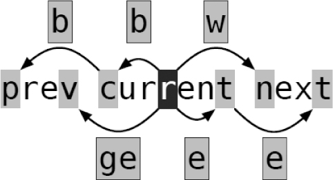

）。下表总结了这些命令：
）。下表总结了这些命令：技巧48基于单词移动
Vim 有两组面向单词正向及反向移动的命令。相比一次移动一列来说，这二者允许我们更快地移动。
Vim提供了一组动作命令，让我们每次可以把光标正向或反向移动一个单词的距离（参见:h word-motions）。下表总结了这些命令：
我们可以认为这些动作命令是成对出现的。w和b命令都以词首为目标，而e和ge命令则是以词尾为目标。w和e都正向移动光标，而b和ge命令则反向移动光标。下图展示了这些面向单词的动作命令的效果：

要记住这4条命令并不容易，并且我也不建议死记硬背。你可以先学会用w和b命令，如果你需要记的话，可以把它们想作“(for-)word”及“back-word”。在用过这些命令之后，你会发现基于单词进行正向或反向移动，要比用h及l一次移动一列快得多。
e和ge命令是对此命令集的补充，不过刚开始你可以先不用它们。偶尔有一天，你也许会发现，有时一下子直接跳到当前单词的结尾也会很有用。举个例子，假设我们想把下列文本中的单词“fast”改成“faster”，可以这样：
把ea命令连在一起可被解读为“在当前单词结尾后添加”。我经常会用到ea，就好像它是一条单独的命令似的。另外，也可以把gea命令当成“在上一单词结尾后添加”的命令，我们偶尔也会用到它。
理解单词与字串
我们经常提到单词，但迄今为止，我们都一直未定义过究竟什么是一个单词。Vim对此有两种不同的定义，并且分别用“单词”（word）和“字串”（WORD）对其进行区分。我们之前遇到过的每个面向单词的动作命令，都有一个面向字串的命令与其对应，这当中包括W、B、E和gE。
一个单词由字母、数字、下划线，或其他非空白字符的序列组成，单词间以空白字符分隔（参见:h word）。而字串的定义则更简单，它由非空白字符序列组成，字串间以空白字符分隔（参见:h WORD）。
好，已经看到其定义了，但这究竟指什么呢？细节留待 Vim 的实现者去考虑吧，对于普通用户而言，我们可以这样简单地想：字串比单词更长！请看下面这段文本，然后快速数一下当中单词的个数：
你是不是数到5个或10个单词（或二者中间的某个值）？上例中包含了5个字串及10个单词。句号及单引号都被当成了单词，因此，如果我们用w命令在这段文本中移动的话，会显得很慢：
相反，如果我们基于字串移动，用更少的按键就可以达到同样的效果：
在本例中，面向字串的动作命令似乎是更好的选择，然而这并不是绝对的。因为有时候，我们可能会想把“we”当成一个单词来进行操作。
例如，如果我们想把“we”改成“you”，可以这样做：
在另外一些时候，我们可能更想把“we’re”当作一个字串来进行处理。例如，如果我们想把它改成“it’s”的话，可以这样做：
如果你想更快地移动的话，可以用面向字串的动作命令；而如果你想以更细的粒度移动的话，则可以用面向单词的动作命令。你自己试着用一下这些命令，然后就会知道什么时候该用单词，什么时候该用字串了。你可以训练一下自己对这些命令的直觉，用不着理解其实现的细节。